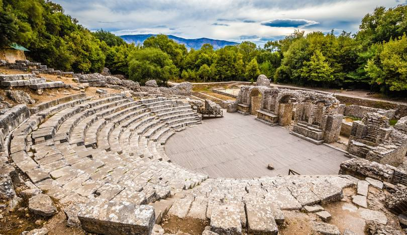

Archaeological Site
Butrint Archaeological Site
Ancient Greek and Roman city, featuring remarkable amphitheater, baptistery, and basilica ruins.
- Ancient Theater
- Roman Baths
- Ancient Basilica
- Museum
Historic Landmarks
Ancient Greek and Roman city, featuring remarkable amphitheater, baptistery, and basilica ruins.
Historic castle and national symbol, home to the Skanderbeg Museum and traditional old bazaar.
One of the oldest inhabited castles in the world, featuring Byzantine churches and Ottoman mosques.
Ancient castle with stunning views of Shkodër, Lake Skadar, and three converging rivers.
Ancient Greek colony featuring a remarkable archaeological museum and monastery.
Beautiful mosque in Tirana's center, known for its frescoes and detailed architecture.
One of Europe's oldest and deepest lakes, featuring unique biodiversity and cultural heritage.
One of the largest castles in the Balkans, featuring a fascinating military museum and stunning views of the historic city.
Albania's largest museum showcasing the country's rich history from ancient times to modern day.
Stunning coastline featuring crystal-clear waters, hidden coves, and picturesque villages.
Pristine alpine park featuring dramatic peaks, waterfalls, and traditional stone houses.
Ancient Illyrian city featuring well-preserved ruins, theater, and religious buildings.